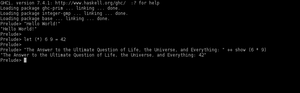

Haskell
Dieser Artikel wurde für die folgenden Ubuntu-Versionen getestet:
Ubuntu 16.04 Xenial Xerus
Zum Verständnis dieses Artikels sind folgende Seiten hilfreich:
Haskell  ist eine polymorphe, statisch typisierte und rein funktionale Programmiersprache. Ausdrücke werden nur bei Bedarf ausgewertet ("lazy evaluation"). Der Name kommt vom Logiker Haskell Curry. Haskell baut auf dem Lambda-Kalkül, einer formalen Sprache zur Untersuchung von Funktionen, auf. Daher kommt auch das Logo in Form eines Lambdas.
ist eine polymorphe, statisch typisierte und rein funktionale Programmiersprache. Ausdrücke werden nur bei Bedarf ausgewertet ("lazy evaluation"). Der Name kommt vom Logiker Haskell Curry. Haskell baut auf dem Lambda-Kalkül, einer formalen Sprache zur Untersuchung von Funktionen, auf. Daher kommt auch das Logo in Form eines Lambdas.
Installation¶
GHC¶
Der Haskell-Compiler GHC (The Glorious Glasgow Haskell Compilation system) kann direkt aus den Quellen installiert werden: [1]
ghc (universe)
 mit apturl
mit apturl
Paketliste zum Kopieren:
sudo apt-get install ghc
sudo aptitude install ghc
Er bietet mit dem Befehl ghci einen interaktiven Modus, um Code direkt im Interpreter auszuführen.
Haskell-Platform¶
Stattdessen kann auch direkt die Haskell-Platform, eine Zusammenstellung von Werkzeugen und Bibliotheken rund um Haskell, installiert werden:
haskell-platform (universe)
mit apturl
Paketliste zum Kopieren:
sudo apt-get install haskell-platform
sudo aptitude install haskell-platform
Inbegriffen sind u.a.:
Weitere Compiler¶
Weitere Compiler sind auf Wikipedia zusammengefasst: Haskell - Implementations - Die meisten davon sind nicht in den Standardquellen verfügbar.
Bedienung¶
Haskell-Programme können sowohl über den Interpreter geschrieben werden, als auch direkt ausgeführt werden. Ein Kompilieren zu Bytecode ist ebenfalls möglich.
Interpreter¶
Der interaktive Interpreter kann mit dem Aufruf von
ghci
im Terminal[2] gestartet werden. Der Interpreter erfasst die Befehle erst mal nur zeilenweise. Mehrzeilige Anweisungen müssen in einem speziellen Block :{ :} geschrieben werden.

Hinweis:
Im interaktiven Modus müssen alle Zuweisungen (auch die von Funktionen) mit let erfolgen.
Beispiel 1¶
Die Fakultät kann z.B. mit der product-Funktion aus der Standardbibliothek (Prelude) errechnet werden:
let factorial n = product [1..n]
Die Funktion kann beispielsweise mit der Zahl 10 aufgerufen werden. Dies geschieht mit dem Befehl:
factorial 10
Beispiel 2¶
Ohne die Standardbibliothek zu nutzen, kann folgende rekursive Funktion das Problem lösen:
:{
let {
factorial 0 = 1;
factorial n = n * factorial (n - 1);
}
:}
Der Aufruf erfolgt wie bei Beispiel 1. Da der Code zwischen den Blockmarkern in eine einzige Zeile eingelesen wird, müssen die Befehle durch einen Semikolon ; getrennt werden. Eine Einrückung ist im normalen Code zwingend, entfällt aber dadurch, dass alles letztendlich in einer Zeile steht.
Beispiel 3¶
Da Haskell nur bei Bedarf die Ausdrücke auflöst ("lazy evaluation"), kann auf einfache Weise mit unendlich großen Mengen gearbeitet werden. Hier werden die ersten zehn geraden Zahlen aus einer unendlichen Liste (null bis unendlich) ausgegeben:
take 10 [x | x <- [0..], x `mod` 2 == 0]
Quelldatei¶
Wie bei anderen Skriptsprachen, kann auch Haskellcode direkt in eine Datei geschrieben und ausgeführt werden. Die Datei wird dann mit dem Interpreter direkt ausgeführt[2]:
ghc HASKELLDATEI.hs
Beispiel 1¶
Ein einfaches Hello-World-Programm:
1 2 3 | -- Einfaches Hello-World Beispiel. main :: IO () main = putStrLn "Hello, World!" |
Es gehört zum guten Stil, zu allen Funktionen entsprechende Typdeklarationen zu schreiben (entsprechend die erste Zeile main :: IO ()).
Beispiel 2¶
Die Fakultät wird hier je nach Benutzereingabe berechnet:
1 2 3 4 5 6 7 8 9 10 | factorial :: Int -> Int factorial n -- anstatt "Pattern matching" werden | n == 0 = 1 -- hier "Guards" (mit '|') verwendet | otherwise = n * factorial (n - 1) main :: IO () main = do putStrLn "Welche Fakultät soll berechnet werden?" n <- getLine putStrLn . show $ factorial $ read n |
Beispiel 3¶
Hier wird ebenfalls die Fakultät berechnet, das vorherige Beispiel allerdings noch gegen fehlerhafte Benutzereingaben abgesichert.
1 2 3 4 5 6 7 8 9 10 11 12 13 14 15 16 17 18 19 20 21 22 23 24 25 | import Data.Maybe factorial :: Integer -> Integer -- Integer hat keine Größenbeschränkung factorial 0 = 1 -- im Gegensatz zu Int factorial n = n * factorial (n - 1) maybeRead :: Read a => String -> Maybe a maybeRead s = case reads s of [(x, "")] -> Just x _ -> Nothing getIntfromString :: String -> Maybe Integer getIntfromString str = maybeRead str main :: IO () main = do putStrLn "Welche Fakultät soll berechnet werden?" input <- getLine let maybeInt = getIntfromString input in case maybeInt of Just n -> if (n >= 0) then putStrLn $ "Das Ergebnis von " ++ show n ++ "! ist: " ++ show (factorial n) else error "Keine positive Zahl übergeben!" Nothing -> error "Keine Ganze Zahl übergeben!" |
Ab GHC 7.6 existiert die Funktion maybeRead bereits im Modul Text.Read .
Links¶
Haskell Hierarchical Libraries
- Bibliotheksindex
Learn You a Haskell for Great Good!
- Kurzweiliges EinsteigertutorialHaskell in 20 min
 - Video-Vortrag von Robert Clausecker - Ubucon 2012
- Video-Vortrag von Robert Clausecker - Ubucon 2012

- Erstellt mit Inyoka
-
 2004 – 2017 ubuntuusers.de • Einige Rechte vorbehalten
2004 – 2017 ubuntuusers.de • Einige Rechte vorbehalten
Lizenz • Kontakt • Datenschutz • Impressum • Serverstatus -
Serverhousing gespendet von